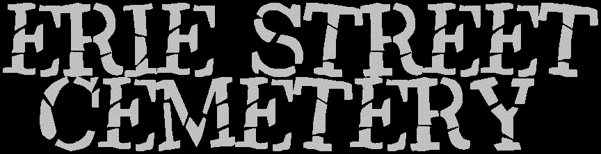
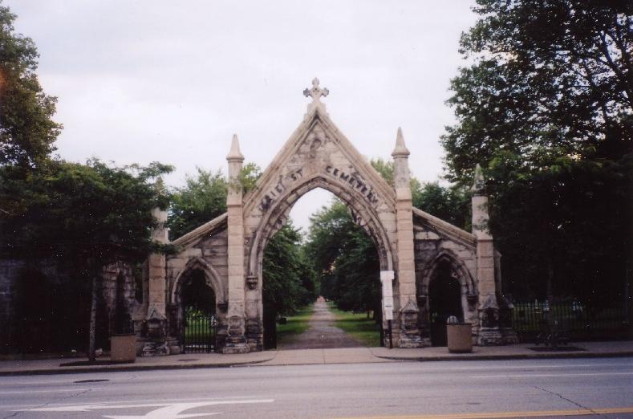
The Erie Street Cemetery is Cleveland's oldest existing cemetery. When the land was first acquired by the Village of Cleaveland in 1826, it was considered far enough from the center of population that it wouldn't get in the way of new construction. Occupants of the more centrally-located Ontario Street Cemetery were exhumed and reburied here. Today, downtown Cleveland towers all around this spacious, shady piece of land; the city has grown and expanded over the decades, but the graveyard has remained essentially unchanged for more than 175 years.
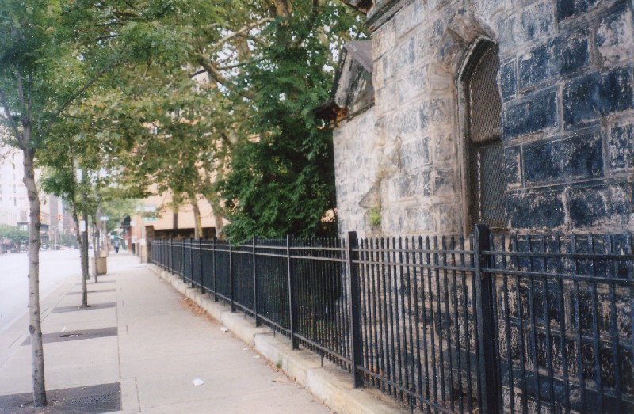
The cemetery's peaked and spired stone gate stands directly across East 9th Street (formerly Erie Street) from Jacobs Field, the stadium where the Cleveland Indians play baseball.
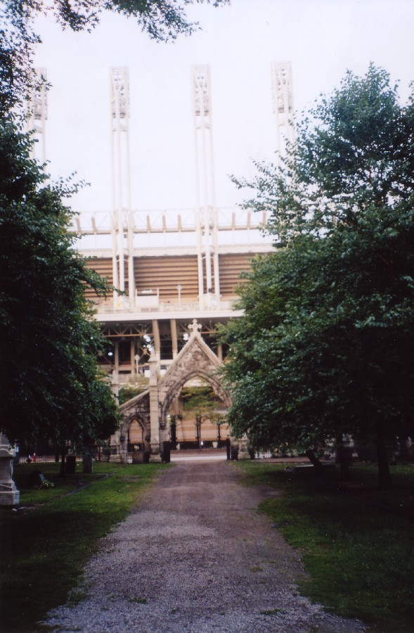
This is appropriate, because there are at least two real Native American Indians buried in the Erie Street Cemetery, and both are informally associated with the city's fairly racist baseball mascot, Chief Wahoo. Neither one of them was the inspiration for Chief Wahoo or the team's name, but they're both given the credit from time to time.
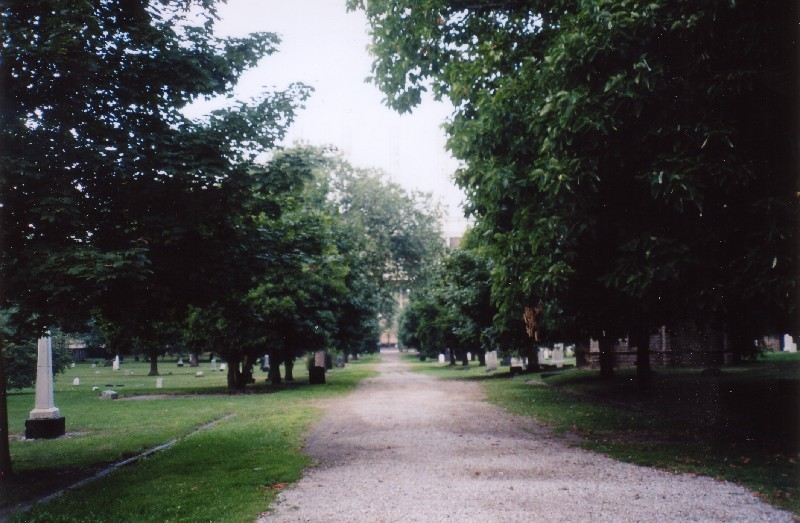
First there's Chief Thunderwater, a Niagara Indian who was a Cleveland celebrity throughout much of his life. He toured North America and Europe in Buffalo Bill's Wild West Show, and worked to safeguard his people's rights and culture while also improving relations between Indians and white people. (At least that's what the biographies say.) In his adopted hometown he was referred to as "the official Cleveland Indian." Since he died in 1950, the nickname probably came from the baseball team, not the other way around.
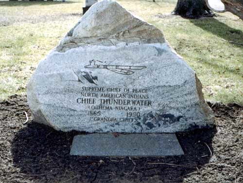
Then there's Joc-O-Sot, the Indian whose angry spirit is said to wander the Erie Street Cemetery. He was a chief of the Fox or Mesquakie tribe in the Central Plains who fought against the US in the 1831 Black Hawk War. Afterward he worked as a fishing and hunting guide in Cleveland. He joined a theatrical troupe run by Dan Marble and toured as part of a show about Indian life. In 1844, after a successful European tour during which they were received by Queen Victoria, Joc-O-Sot fell ill from an old war wound and returned to the United States. He hoped to be buried in Wisconsin or Minnesota, closer to his ancestral lands, but he made it no farther than Cleveland, where he died in August of that year.
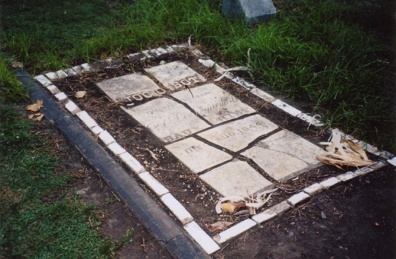
Joc-O-Sot's tombstone is cracked by his rage, possibly at being buried so far from home. They gave him a new, boulder-shaped stone, but that doesn't seem to have placated him much. His spirit sometimes crosses the street and affects Indians games--or so superstitious fans believe. They leave trinkets like feathers and shotglasses on his fragmented stone.
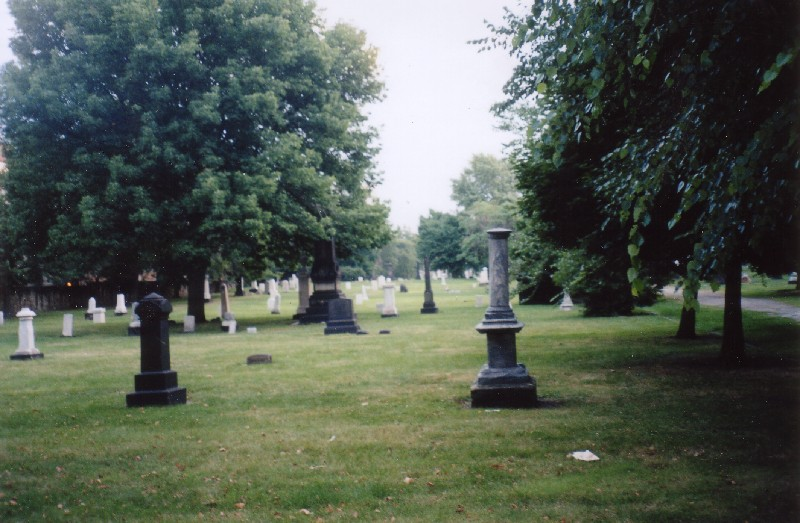
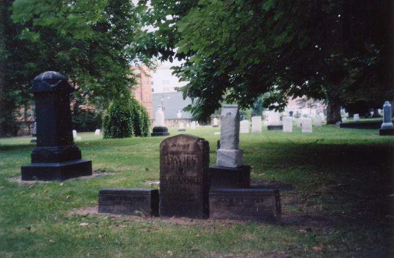
Other interesting graves at the Erie Street Cemetery include four Cleveland mayors--Joshua Mills (1838-39), John W. Allen (1841), George Hoadley (1846), and Josiah A. Harris (1847)--and a monument to "Unknown Early Settlers," a bunch of graves moved from Ontario Street after being buried there in 1820.
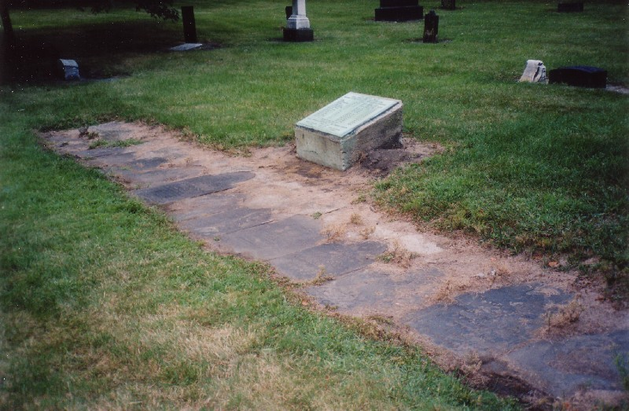
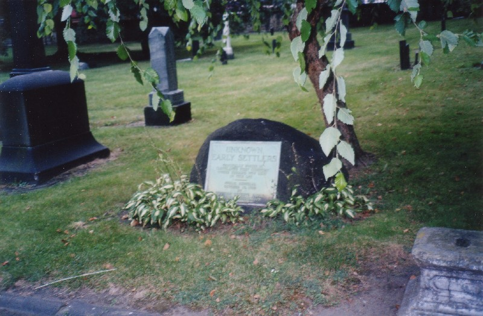
The graveyard is located at 2254 East 9th Street and stretches back to East 14th. It's open from dusk 'til dawn seven days a week, but as far as I can tell, the gates are never closed, so a self-guided tour is always easy to do. I didn't see Joc-O-Sot's angry spirit (or any other spirits, for that matter) when I visited the Erie Street Cemetery; it's a peaceful place, and about as old as anything in Ohio.
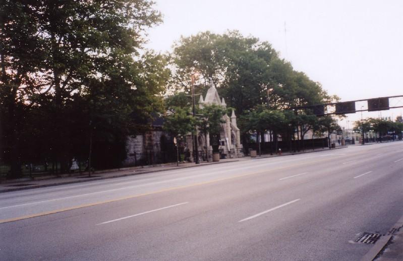
Find-a-Grave: Erie Street Cemetery
Rootsweb: Erie Street Cemetery
Dead Ohio: Erie Street Cemetery
Cuyahoga County Cemetery Page: Erie Street Cemetery
Back
forgottenohio@yahoo.com
Sources
Petkovic, John. "Ghosts, Haunts, and Urban Legends." Cleveland Plain Dealer. October 31, 2000 pp. 1A.